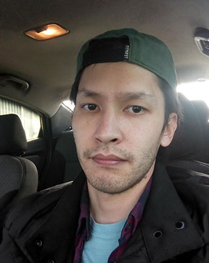

Алмат Камбетов
Обо мне
Всем привет! Меня зовут Алмат. Родился и вырос в городе Алматы. Мне 30 лет. Родители учителя. Есть брат-двойняшка и сестренка.
Из фильмов и литературы предпочитаю научную фантастику. Из писателей в первую очередь приходят на ум
Курт Воннегут, Альфред Ван Вогт и Айзек Азимов
Из сериалов и фильмов нравятся "Друзья", Интерсталлер", "Невидимый Гость" и в подобном духе.
Из музыки предпочитаю рок и классику в рок аранжировке. Любимые группы BFMV, Evanescence, Эпидемия.
Образование
- Школа №62
Окончил в 2008г. - Алматинский университет энергетики и связи
Факультет Информационных систем
Окончил в 2012г.
Опыт работы
Сетевой инженер с 2013г.
Хобби
- Бег
- Игра на гитаре
- Программирование на JS
Как я стал разработчиком
Разработчиком я пока не стал, но иду к цели. Созданием сайтов я увлекался со времен студенчества. Поэтому затрудняюсь написать даты что и когда изучал.
Помимо этого в то время мне нравилась тема компьютерных сетей. На тот момент компьютерные сети мне нравились больше, поэтому стал сетевым инженером.
Программированием занимался в качестве хобби. Сейчас хочу сменить сферу деятельности и стать Frontend разработчиком.
Из Javascript фреймворков изучил Vue.js. На курс записался, потому что есть React и возможен offer.
Если резюмировать, приобрел следующие навыки:
- HTML/CSS
- Javascript
- Vue.js
- Vuex
- Vue router